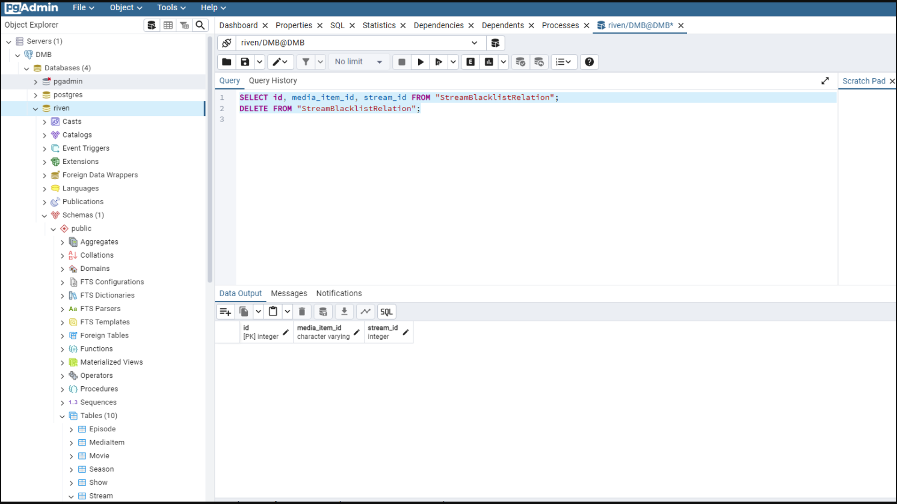
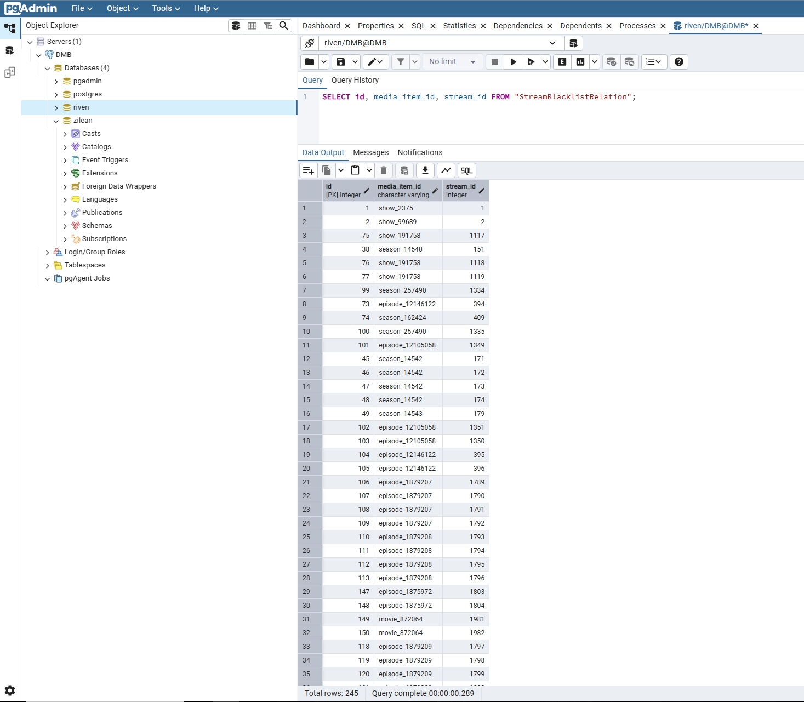
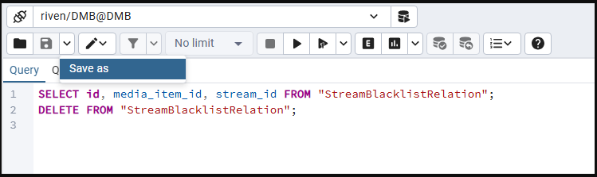
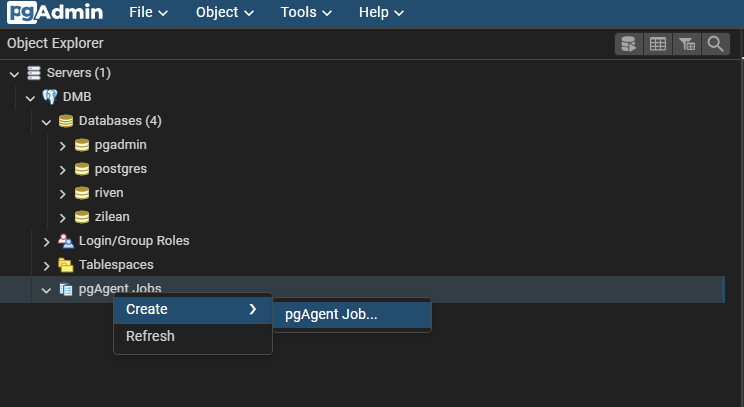
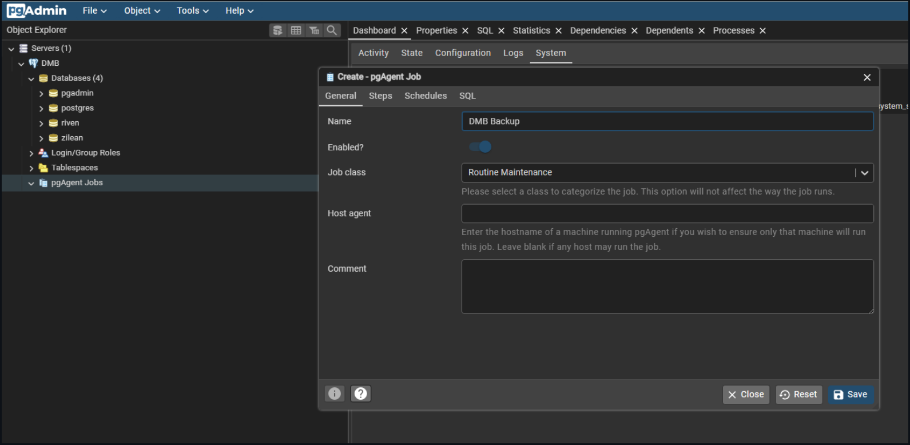
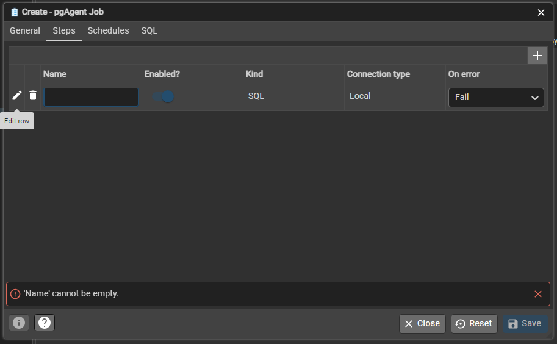
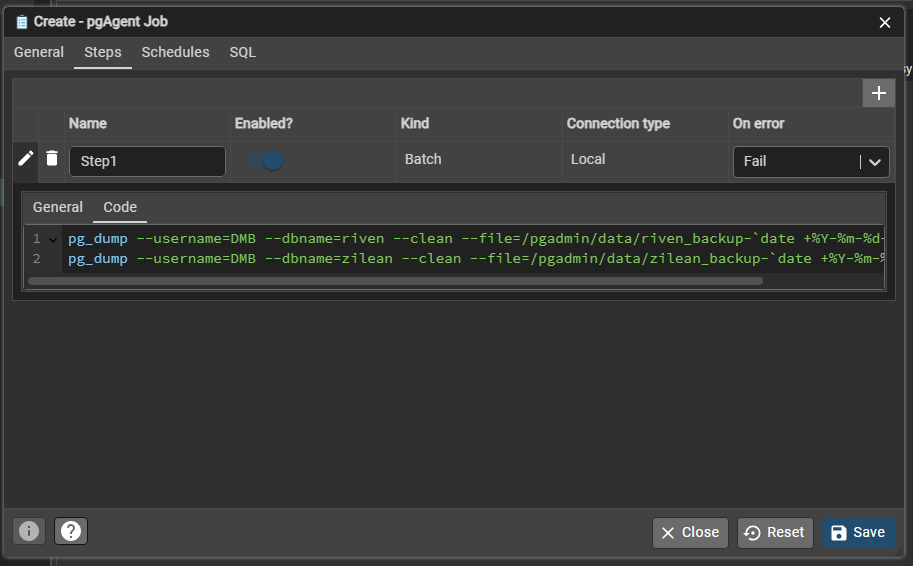
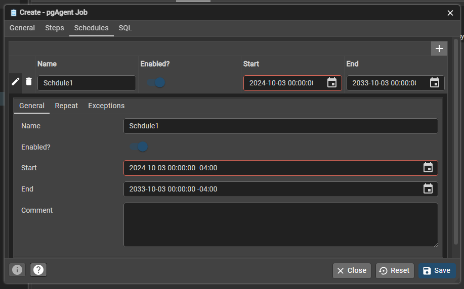
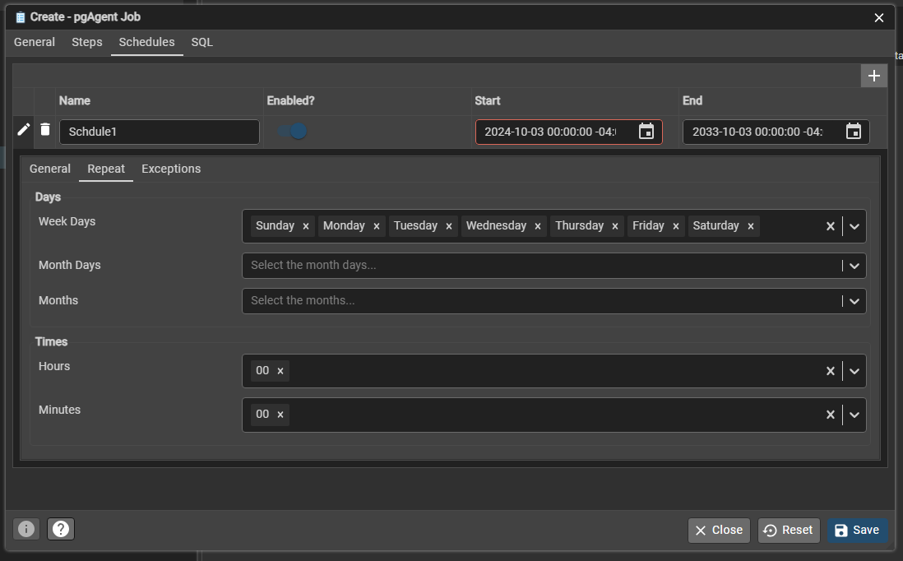

pgAdmin FAQ#
Below are common questions and helpful usage tips for working with pgAdmin in DMB.
❓ Frequently Asked Questions (FAQ)#
What is pgAdmin used for in DMB?#
pgAdmin is a web-based GUI for managing PostgreSQL. In the context of DMB, it connects to the PostgreSQL instance used by services like Riven and Zilean.
You can use it to:
- Explore and modify database tables and data
- Run SQL queries manually using the Query Tool
- Schedule tasks using pgAgent (optional tool inside pgAdmin)
- View the System Stats inside PostgreSQL
🧪 Using pgAdmin’s Query Tool#
To run manual queries (e.g., inspecting or modifying blacklist entries):
- Navigate to the "Databases" list in the left sidebar.
- Right-click the
rivenorzileandatabase. - Select Query Tool.
- Paste your SQL query in the top panel and run it.
🔄 Example: View & Clear Riven's Stream Blacklist#
SELECT id, media_item_id, stream_id FROM "StreamBlacklistRelation";
DELETE FROM "StreamBlacklistRelation";

To just view the count:
SELECT COUNT(*) FROM "StreamBlacklistRelation";

💾 Save Queries for Later#
Click Save As in the Query Tool to store frequently used queries as .sql files.

🧹 Drop a Database or Create a Manual Backup in pgAdmin#
🗑️ Drop a Database#
You can delete a database from within pgAdmin if you no longer need it (e.g., to reset Riven or Zilean).
- In the Object Browser, expand the Databases section.
- Right-click the target database (e.g.,
rivenorzilean). - Select Delete/Drop.
- Confirm when prompted.
Warning
This will permanently remove the database and all its data.
Ensure you’ve backed up anything you want to keep before proceeding.
💾 Manually Create a Database Backup#
To create a backup of any database using the pgAdmin interface:
- In the Object Browser, right-click the desired database.
- Choose Backup.
-
In the dialog:
- Format: Select
Customto enable full database restore capability. - Filename: Save to
/pgadmin/data/your_backup_name.backupor.sql.
- Format: Select
-
Ensure Dump Options #1 is configured with:
Include CREATE DATABASE statementenabled (for standalone restoration)Only dataandOnly schemaunchecked (you want both schema and data)
-
Under Dump Options #2, verify or set advanced filters if needed.
-
Click Backup to start the process.
🗂️ .backup vs .sql#
-
.backup(Custom Format)- Recommended for complete backups
- Supports compression, selective restore, and full restore via pgAdmin or
pg_restore - Not human-readable but ideal for production-grade backups
-
.sql(Plain Format)- Outputs all SQL commands as text
- Human-readable and easy to inspect or modify manually
- Can be restored via
psql, but lacks compression and selective restoration features
For a reliable, restorable snapshot of your database, always choose .backup with Custom format.
For more advanced backup configuration and explanation of options, see the pgAdmin Backup Dialog Documentation.
⏱️ Optional: Use pgAgent to Schedule Tasks#
pgAdmin comes with pgAgent, which lets you create recurring jobs.
This is entirely optional and not required to use DMB.
💾 Example: Scheduled Backups with pgAgent#
- Navigate to
pgAgent Jobsunder your connected DMB server. -
Right-click →
Create → pgAgent Job
-
Enter the job name and any comments.

-
Go to the Steps tab and click the
+button to Add row. -
Edit the new row to configure a backup step.

-
Enter a step name, set
Kind=Batch, and paste your backup command in the Code tab:pg_dump --username=DMB --dbname=riven --clean --file=/pgadmin/data/riven_backup-`date +%Y-%m-%d-%H-%M-%S`.sql pg_dump --username=DMB --dbname=zilean --clean --file=/pgadmin/data/zilean_backup-`date +%Y-%m-%d-%H-%M-%S`.sql
-
Go to the Schedules tab to define when the backup should run.

-
On the Repeat tab, set a repeat interval like daily at midnight.

-
Save your pgAgent job.
Backups are saved in /pgadmin/data by default.